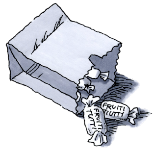
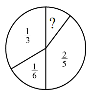
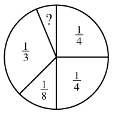
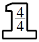
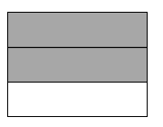
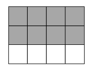
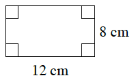
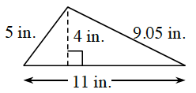
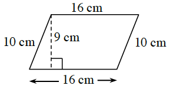
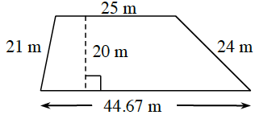

What part is missing?
Subtracting Probabilities
In Lesson 1.2.7, you calculated probabilities for single events and combinations of events when either one outcome or the other is desirable. You have also compared those probabilities to decide which outcomes are most likely. In this lesson, you will work with your study team to apply your knowledge of fractions to represent and calculate the probabilities of a variety of events. As you work today, ask each other these questions to focus your discussion:
How can probabilities be combined?
How can the answer be rewritten in a different form?
Eustice is adding fractions. Here is his work:
How do you think Eustice got his answer? Does his answer make sense? Discuss Eustice’s work with your team. Then explain your reasoning on your paper with diagrams and words.
Help Eustice find the correct answer.

Lindsay has a paper bag full of Fruiti Tutti Chews in three different fruit flavors. She says, “If you reach into the bag, you have a chance of pulling out a Killer Kiwi. There is a chance that you will get Crazy Coconut.”
If you reach into the bag, what is P(coconut or kiwi)?
Does there have to be another flavor in the bag? How can you tell? If so, assuming that there is only one other flavor, what is the probability of getting that flavor?
How many candies might Lindsay have in the bag? Is there more than one possibility? Assume that all candies in the bag are whole candies.

Lyle asked for a challenge problem, and his teacher gave him this one:
There is a chance of drawing a red marble out of a bag of marbles. If the probability of drawing a red or a blue marble is , what is the probability of drawing a blue marble?
When Lyle’s teammates saw the challenge he was working on, they each had a different idea for how he should start.
Mayra suggested that he start by rewriting and so that they have a common denominator.
Kenessa disagreed. “You want to set up a subtraction problem,” she said. She wrote the expression to show the number Lyle needs to find.
Darren had a different idea. “The probability that you would draw either red or blue is the same as the probability of drawing red added to the probability of drawing blue,” he said. He wrote this expression:
Which way would you suggest Lyle start working to find P(blue)?
Discuss your ideas with your study team.
Write a clear explanation of which method you recommend and why.
Include your ideas about whether the other strategies will solve the problem and why you did not choose them.
What is the probability of drawing a blue marble? Explain your reasoning.
Louise is playing a game, but the spinner is incomplete. Each section of the spinner is labeled with the probability of spinning it. What fraction is missing?

Charles found a spinner his teacher was making. He knew that if he put his problem-solving skills to use, he would be able to figure out the missing piece and finish the spinner for his teacher.
Write an expression for the problem Charles needs to solve. Is there more than one way to do this?
Find the solution.

Work with your study team to invent two new spinners with missing parts, like the spinners in problems 1-133 and 1-134. Then:
Find the missing piece on your own paper.
On a new sheet of paper, draw and label your spinner.
Trade problems with another study team and find the missing parts of their spinners while they find yours.
LEARNING LOG
In your Learning Log, describe the process you use to add or subtract fractions when the probabilities have different denominators. Create an example and show your solution with pictures and number expressions. Then answer these questions:
Learning Log
How do you rewrite the fractions to represent pieces that are the same size?
How do you identify what common denominator to use?
Label these notes “Adding Probabilities with Unlike Denominators” and include today’s date.
Methods & Meanings
Equivalent Fractions
Fractions that are equal, but written in different forms, are called equivalent fractions. Rewriting a fraction in an equivalent form is useful when you want to compare two fractions or when you want to combine portions that are divided into pieces of different sizes.
A Giant One is a useful tool to create an equivalent fraction. To rewrite a fraction in a different form, multiply the original fraction by a fraction equivalent to .

A picture can also demonstrate that these two fractions are equivalent:


Review & Preview
Rewrite each fraction in at least two different ways.
Jonathan measured cups of flour into a bowl on the counter. Then he spilled part of it, and now there is only cup left. How much did he spill?.
Maggie is making muffins with a recipe that yields muffins. 1-139 HW eTool
There are people in Maggie’s book club. If the muffins are divided evenly among each person, how much will each person get? Explain your thinking.
If Maggie wanted to divide the muffins evenly between the students in her class, how much muffin would each person get? Explain your thinking.
Multiple Choice: If the probability of getting a particular result in an experiment is , what is the probability of not getting that result? Explain your choice.
CheckpointThroughout this book, key problems have been selected as “checkpoints.” Each checkpoint problem is marked with an icon like the one at left. These checkpoint problems are provided so that you can check to be sure you are building skills at the expected level. When you have trouble with checkpoint problems, refer to the review materials and practice problems that are available in the “Checkpoint Materials” section at the back of your book.
This problem is a checkpoint for area and perimeter of polygons. It will be referred to as Checkpoint 1.
For each figure below, find the area and the perimeter.


Parallelogram

Trapezoid

Check your answers by referring to the Checkpoint 1 materials located at the back of your book.
Ideally, at this point you are comfortable working with these types of problems and can solve them correctly. If you feel that you need more confidence when solving these types of problems, then review the Checkpoint 1 materials and try the practice problems provided. From this point on, you will be expected to do problems like these correctly and with confidence.